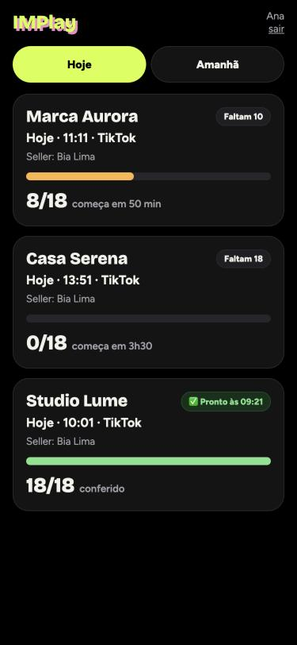
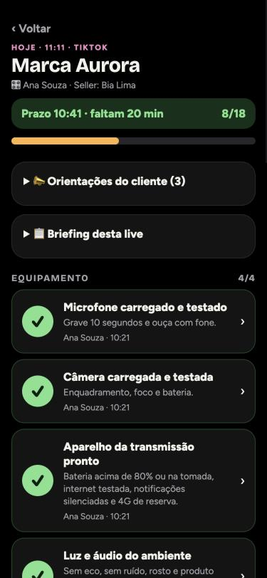
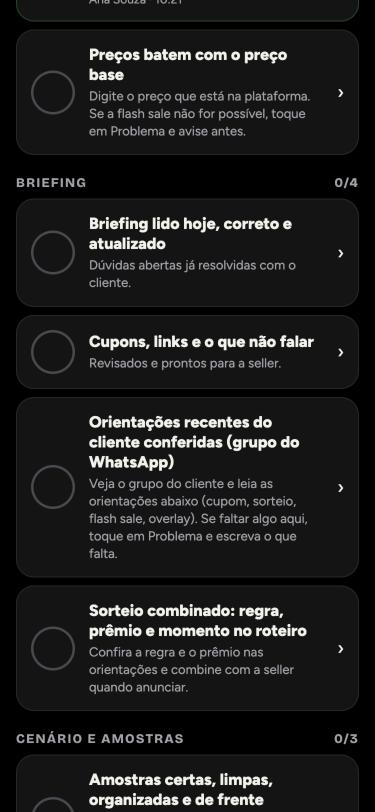
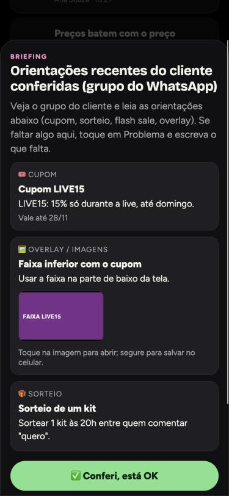
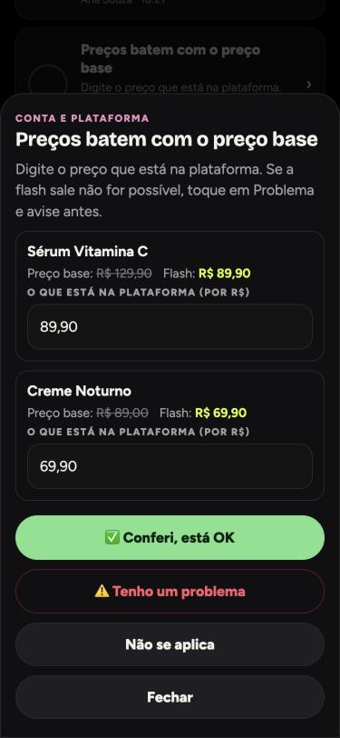
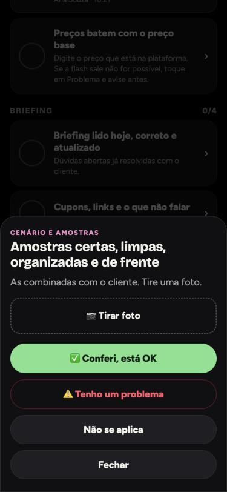
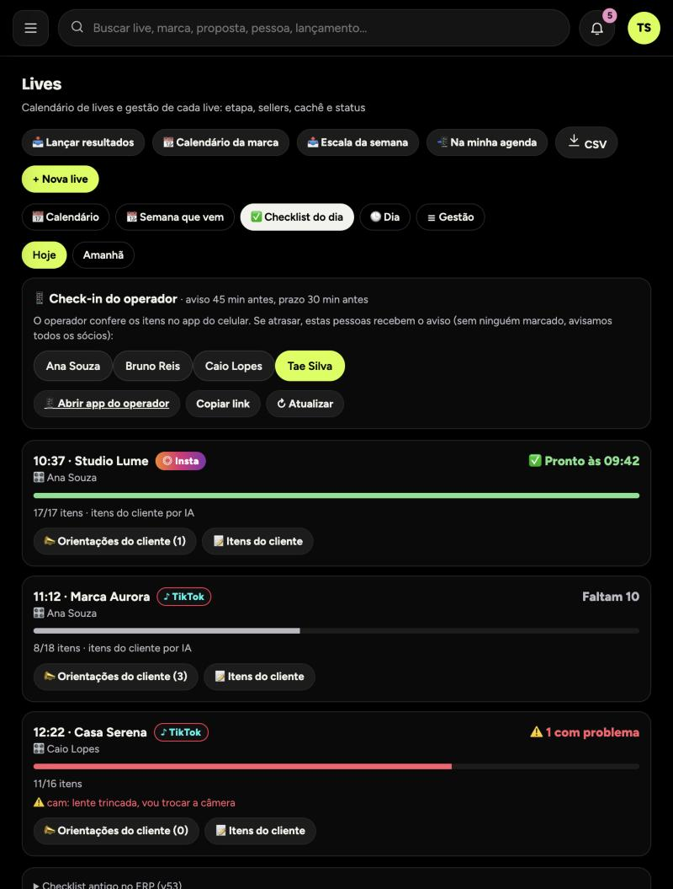
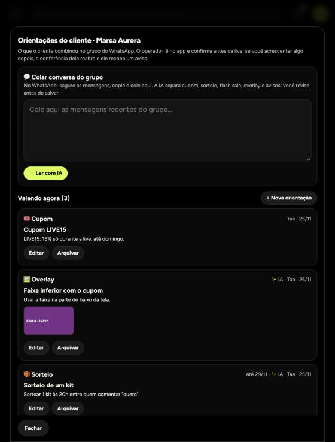

Antes de cada live você confere tudo no celular, item por item. O sistema guarda quem conferiu, a que horas e com que foto. Leva uns 10 minutos.
1Instale o app na Tela de Início. No iPhone, abra o endereço no Safari, toque em Compartilhar (quadrado com seta) e em Adicionar à Tela de Início. Depois abra sempre pelo ícone novo.
2Entre com o mesmo e-mail e senha do ERP.
3Toque em “Ativar avisos” e permita as notificações. Você recebe um aviso de teste na hora.

Cada cartão é uma live sua: marca, horário, quantos itens faltam e a barra de progresso. A cor da barra mostra a urgência:
Toque no cartão da próxima live.

No topo fica sempre o prazo (“faltam 20 min”) e quantos itens estão feitos. Logo abaixo, as Orientações do cliente e o Briefing: leia antes de começar.
Os itens aparecem em blocos: Equipamento, Conta e plataforma, Briefing, Cenário e amostras, Pessoas.

Toque no círculo para marcar OK nos itens simples. Toque no texto para abrir o item e ver os detalhes.
Itens com orientação do cliente (cupom, sorteio, flash, overlay) sempre abrem a tela com o que foi combinado, para você ler antes de confirmar.
Só marque OK depois de conferir de verdade. A marca fica registrada com seu nome e horário.

Aqui ficam o cupom, o sorteio, a flash sale, as imagens de overlay e os avisos que o cliente combinou. A coordenação lança isso no ERP.
Mesmo assim, abra o grupo do cliente no WhatsApp e confira se tem algo mais recente. Se faltar algo aqui, toque em Problema e escreva o que falta. A coordenação é avisada na hora.
Overlay: toque na imagem para abrir; segure para salvar no celular e carregue na live. Teste antes de começar.

A tela mostra o preço base e o preço da flash do briefing. Digite o preço que está na plataforma (TikTok ou Instagram), produto por produto.
Se não bater com o briefing, o sistema não deixa marcar OK. Corrija na plataforma. Se a flash sale não for possível, toque em Problema e avise antes.

Três itens pedem foto: print da flash sale, amostras e cenário. Toque em “Tirar foto”, tire a foto e confirme. Sem foto, não dá para marcar OK.
| Botão | Quando usar | O que acontece |
|---|---|---|
| ✅ OK | Conferiu e está certo. | Fica salvo com seu nome e a hora. |
| ⚠️ Problema | Algo não está certo ou falta algo (equipamento falhou, preço não bate, orientação faltando). | Você escreve o motivo e a coordenação recebe o aviso na hora. O checklist não fecha até resolver. |
| Não se aplica | O item não existe nessa live (ex.: sem flash sale). | Você escreve o motivo. Conta como resolvido. |
Com todos os itens resolvidos, aparece “Checklist salvo: você conferiu tudo às HH:MM” e o cartão fica verde. Pronto. Se o cliente combinar algo novo depois, o item das orientações volta a ficar pendente e você é avisado.

Uma linha por live: progresso, operador, quem fechou e a que horas, e os itens com problema (em vermelho). Aqui também se escolhe quem recebe os avisos de atraso (sem ninguém marcado, vão todos os sócios).
O botão 📣 Orientações do cliente abre o cadastro do que o cliente combinou. O botão 📝 Itens do cliente edita os itens extras daquela live (a IA sugere, você revisa).

Opção rápida: copie as mensagens recentes do grupo, cole na caixa e toque em Ler com IA. Ela separa cupom, sorteio, flash sale, overlay e avisos. Você revisa, ajusta e salva: a IA pode errar, nada vai para o operador sem você aprovar.
Opção manual: “+ Nova orientação”, escolha o tipo, escreva e anexe imagens (overlay, regulamento do sorteio).
Ao salvar, o operador recebe o aviso e a conferência das orientações volta a ficar pendente para ele. Orientação vencida ou arquivada sai sozinha da live.
Faça com o operador, no celular dele, usando uma live de teste.